/ 0.6.0
أدواتك اليومية.أعلى الشاشة.
جزيرة صغيرة للأدوات التي تحتاجها.
Apple Silicon · يستهدف macOS 13+ · مجاني ومفتوح المصدر
تطبيق أصلي. إمكانات أقرب. الواجهة الفعلية
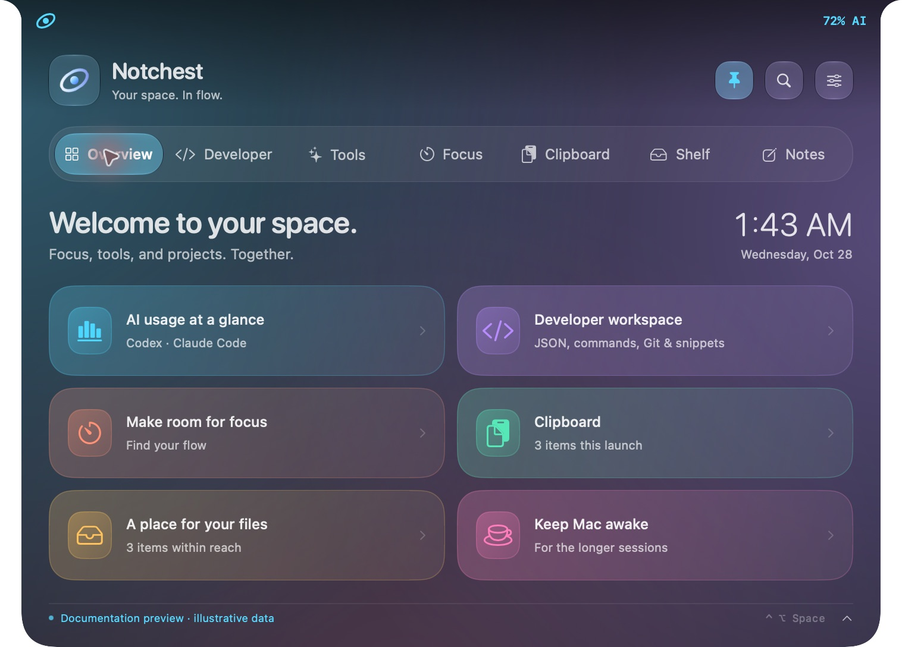
صور من التطبيق أثناء تشغيله. تستخدم معاينات التوثيق بيانات توضيحية موسومة بوضوح. شاهده يتحرك. تسجيل شاشة حقيقي
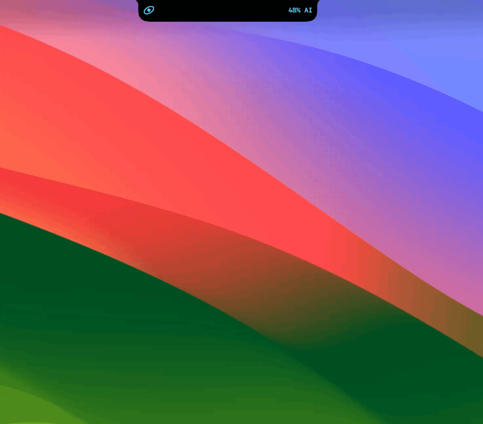
مساحة صغيرة. إمكانات كثيرة.
مكان لكل أداة تحتاجها. تصفح 39 ميزة، وشاهد واجهتها الفعلية،
انقر أي صورة لتكبيرها. تستخدم الصور بيانات توضيحية، وتجد متطلبات الإعداد أسفل كل ميزة.
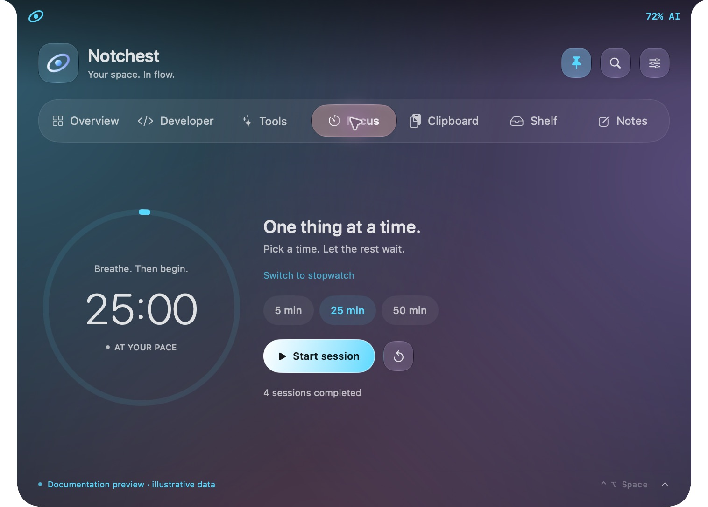
↗ 01 / يومك وقت للتركيز ابدأ جلسة من 5 أو 25 أو 50 دقيقة، وأوقفها أو استأنفها من الجزيرة.
↳ اختر المدة ثم ابدأ الجلسة.
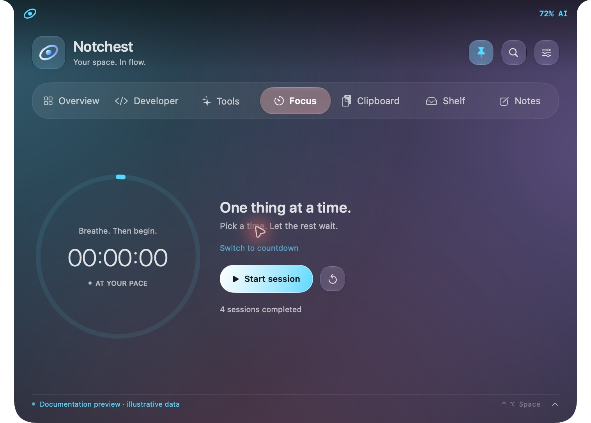
↗ 02 / يومك ساعة إيقاف قريبة استخدم ساعة الإيقاف حين تحتاج جلسة دون موعد انتهاء.
↳ بدّل الوضع من تبويب التركيز.
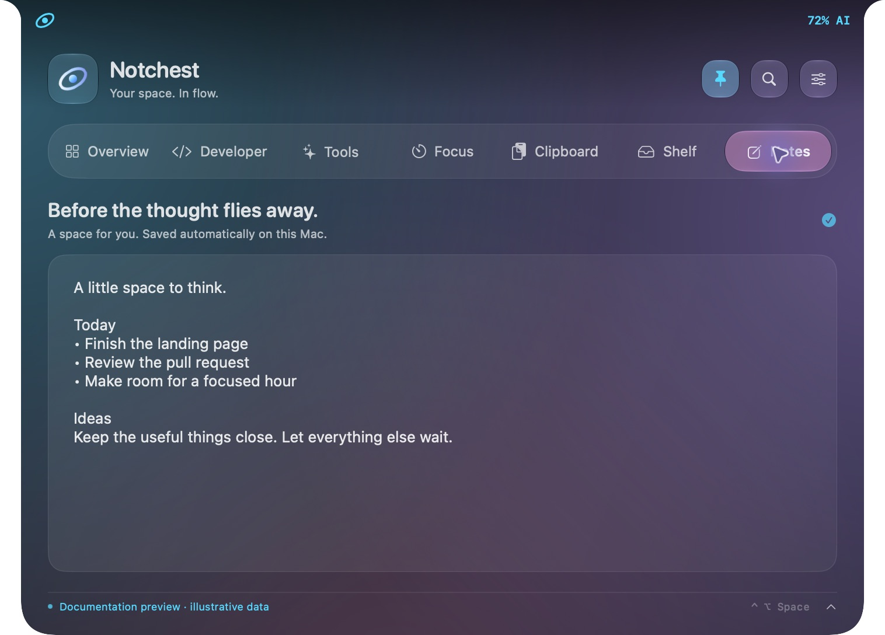
↗ 03 / يومك احتفظ بالفكرة مساحة للملاحظات مع حفظ محلي تلقائي ودعم للنص العربي والإنجليزي.
↳ اكتب مباشرة؛ تُحفظ الملاحظات على هذا الماك.
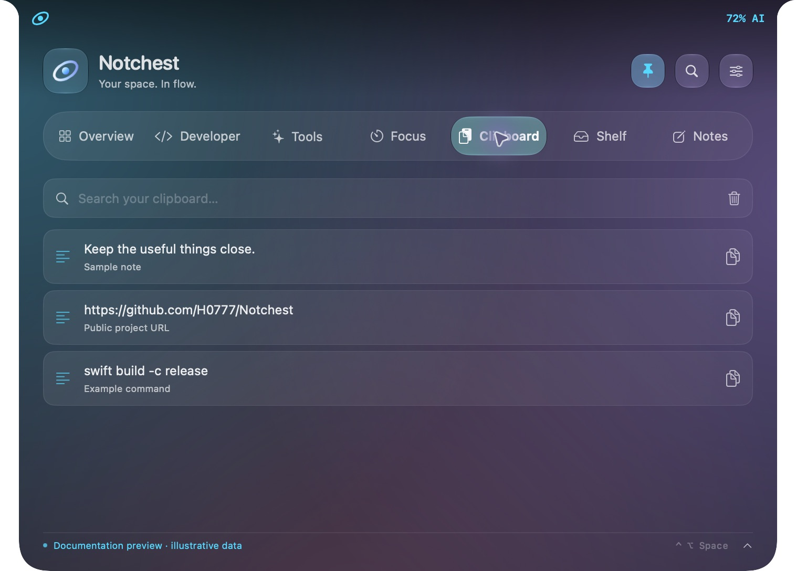
↗ 04 / يومك حافظتك، أقرب سجل نصوص اختياري مع بحث ونسخ وتجاهل العناصر الموسومة بالسرية.
↳ السجل في الذاكرة ويُمسح عند التعطيل أو الإغلاق.
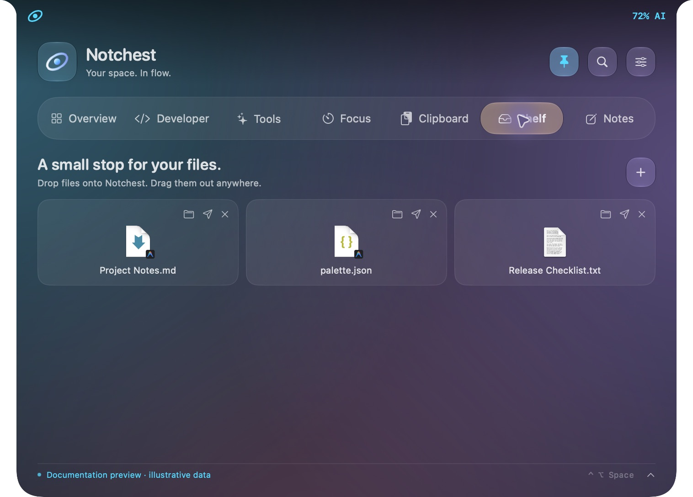
↗ 05 / يومك رف لملفاتك اجمع مراجع الملفات والمجلدات، وافتحها أو أظهرها أو اسحبها للخارج.
↳ إزالة عنصر من الرف لا تحذف الملف الأصلي.
↗ 06 / يومك تطبيقاتك في متناولك أضف التطبيقات إلى الرف وافتحها بنقرة.
↳ يقبل الرف التطبيقات إلى جانب المستندات.
↗ 07 / يومك ابقَ في جلسة العمل أبقِ الماك مستيقظًا لجلسة مدتها ساعة مع إيقاف تلقائي.
↳ فعّلها عندما تحتاجها.
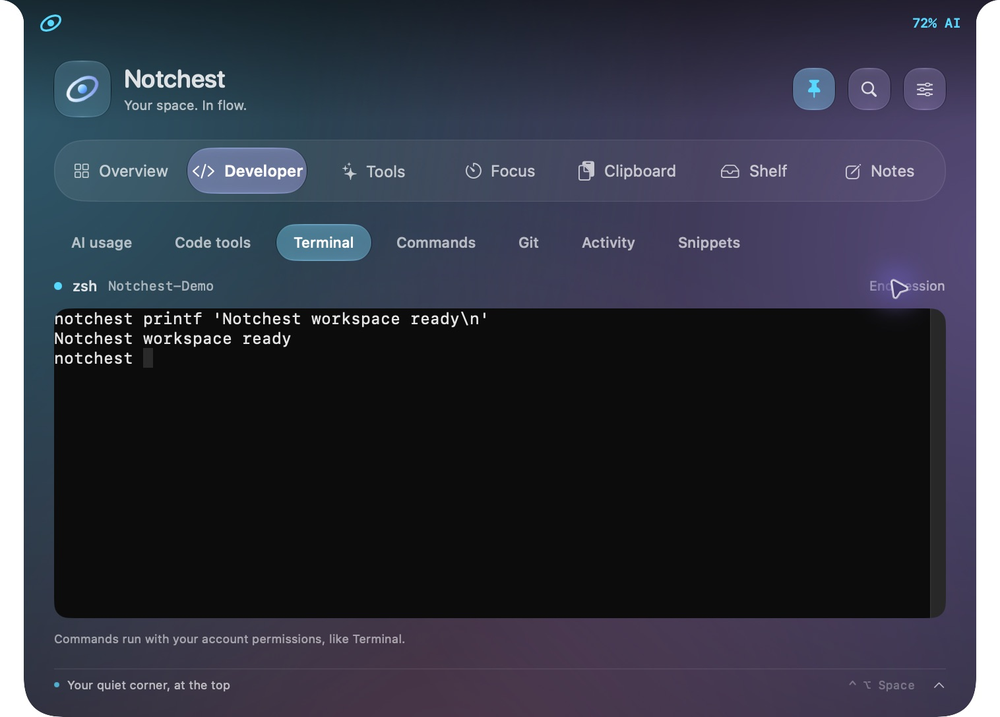
↗ 08 / المطوّر طرفية حقيقية، هنا جلسة أوامر تفاعلية داخل الجزيرة باستخدام SwiftTerm.
↳ تبقى الجلسة مفتوحة عند التنقل بين التبويبات.
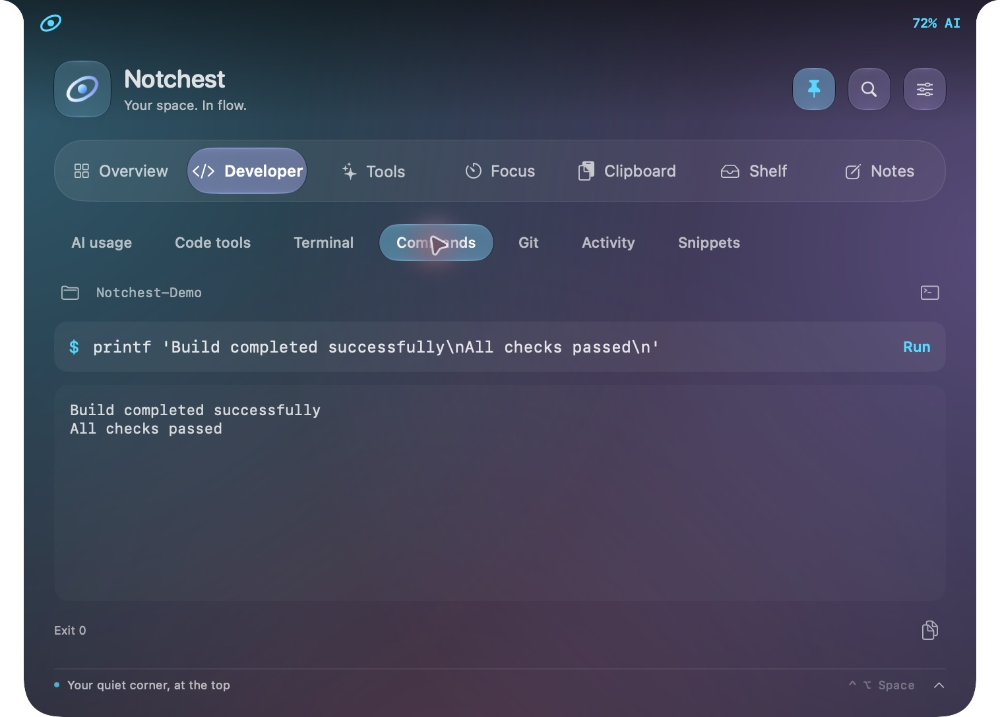
↗ 09 / المطوّر شغّل، راجع، وأكمل شغّل أمرًا في مجلد تختاره وراجع الخرج ورمز الخروج.
↳ يتوفر زر إيقاف للأمر الجاري.
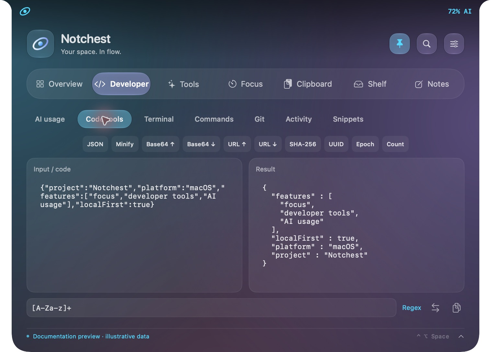
↗ 10 / المطوّر رتّب JSON تحقق من JSON ونسّقه أو صغّره دون مغادرة مساحة العمل.
↳ تعرض الصورة مستندًا توضيحيًا صغيرًا.
↗ 11 / المطوّر حوّل النصوص تحويل Base64 وترميز الروابط وفكهما.
↳ أدخل النص واختر التحويل ثم انسخ النتيجة.
↗ 12 / المطوّر أدوات صغيرة، خطوات أقل SHA-256 وUUID ووقت Unix وISO وعدّ النصوص.
↳ تعمل هذه الأدوات محليًا.
↗ 13 / المطوّر اعثر على النمط اختبر التعبير النمطي وراجع التطابقات أو أخطاء الصيغة.
↳ يتوفر Regex ضمن مساحة أدوات الكود.
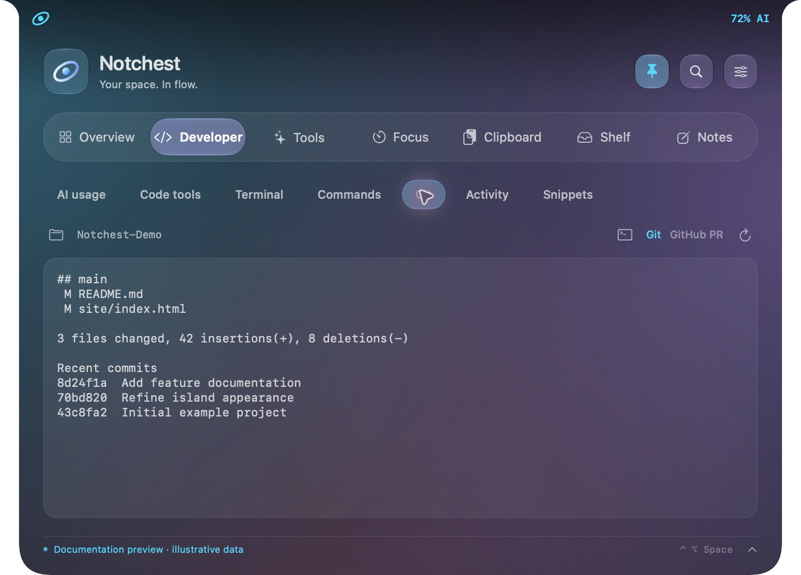
↗ 14 / المطوّر اعرف حالة مشروعك اعرض الفرع والملفات المعدلة وملخص الفرق وآخر الالتزامات.
↳ تعرض الصورة حالة مشروع توضيحية.
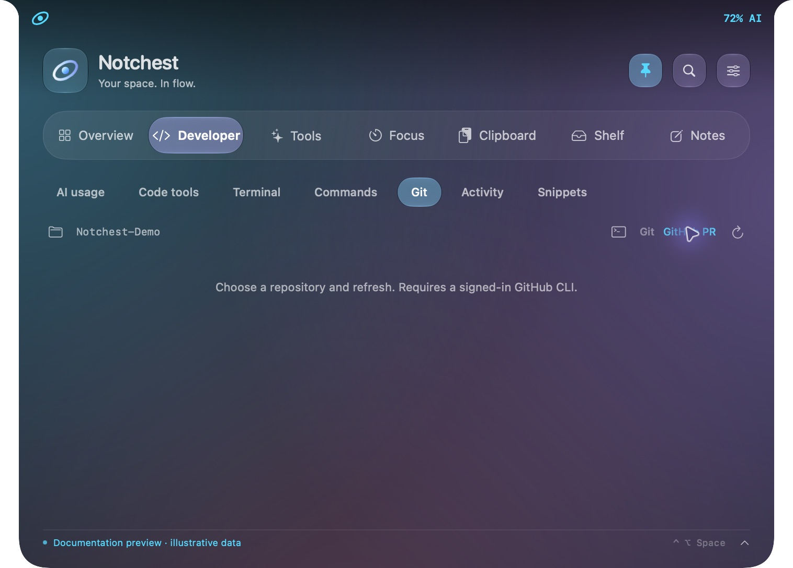
↗ 15 / المطوّر طلبات السحب، أقرب تصفح طلبات سحب المستودع المختار باستخدام GitHub CLI.
↳ يتطلب gh وحسابًا مسجلًا؛ تعرض الصورة حالة الإعداد.
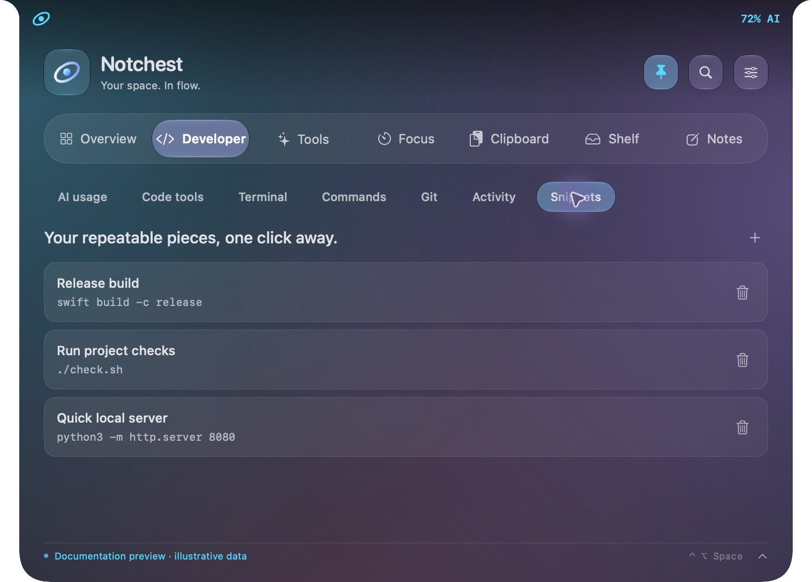
↗ 16 / المطوّر مقتطفات جاهزة احفظ الأوامر والقوالب التي تستخدمها باستمرار.
↳ انقر المقتطف المحفوظ لنسخه.
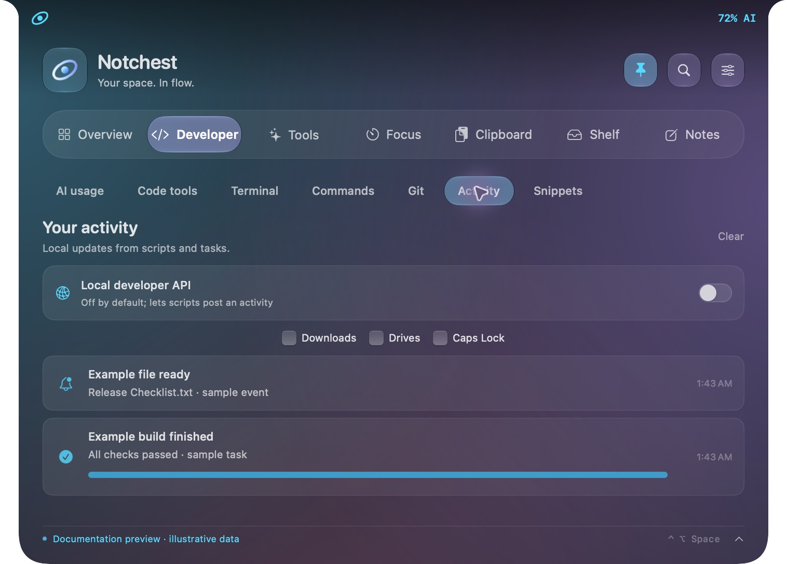
↗ 17 / المطوّر تابع مهام البناء واجهة محلية اختيارية تتيح للسكربتات إرسال التقدم والاكتمال.
↳ وصول محلي برمز متغير؛ تبقى الواجهة معطلة في صور العرض.
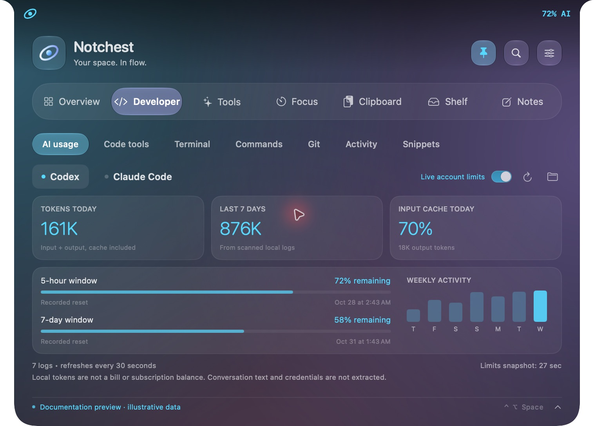
↗ 18 / استخدام AI تابع استخدام الذكاء الاصطناعي استخدام Codex وClaude المحلي: الرموز اليومية والنشاط الأسبوعي والكاش.
↳ أرقام الاستخدام في المعرض توضيحية ولا تمثل رصيد حساب.
↗ 19 / استخدام AI حدود حساب بوضوح اطلب حدود Codex الحية وراجع وقت جلبها.
↳ يتطلب Codex CLI مسجل الدخول؛ الرموز المحلية ليست فاتورة.
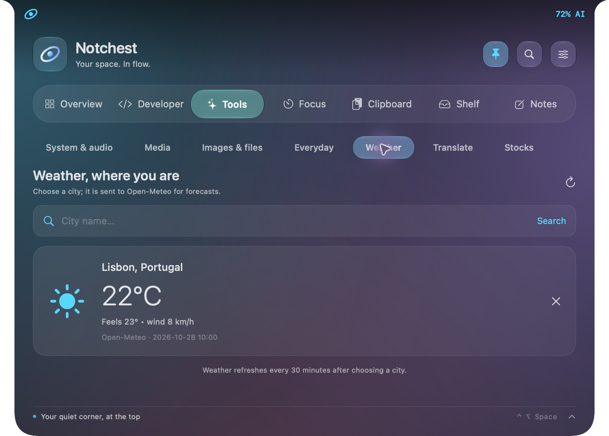
↗ 20 / أدوات الماك نظرة على الطقس اختر المدينة وراجع الحرارة والحالة الحالية والرياح.
↳ التكامل عبر Open-Meteo؛ تعرض الصورة طقسًا توضيحيًا للشبونة.
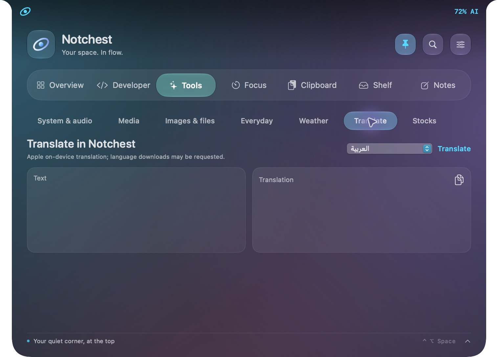
↗ 21 / أدوات الماك ترجمة دون مغادرة الجزيرة ترجمة Apple داخل الجزيرة على macOS 15 فأحدث.
↳ يعتمد توفر اللغات وتنزيلها على macOS.
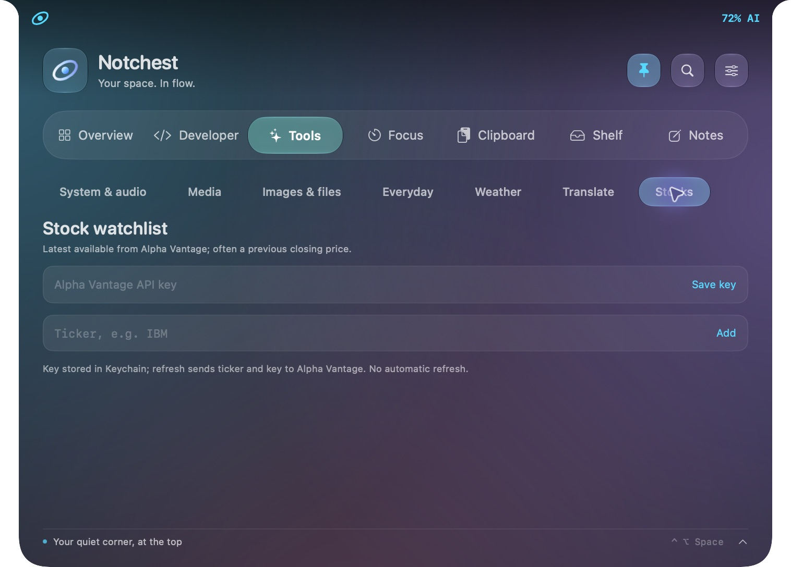
↗ 22 / أدوات الماك قائمة أسهم قريبة تابع الرموز المختارة بمفتاح Alpha Vantage محفوظ في سلسلة المفاتيح.
↳ قد تكون الأسعار لآخر إغلاق؛ تُقارن التنبيهات عند التحديث.
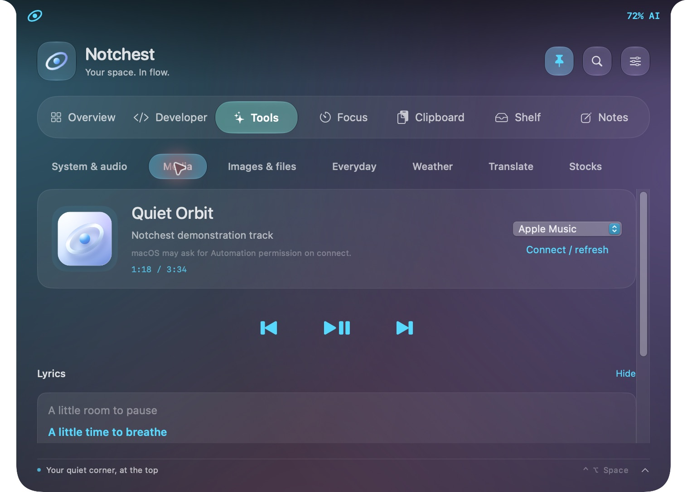
↗ 23 / أدوات الماك مساحة للموسيقى تحكم Apple Music أو Spotify وتفاصيل المقطع وغلافه عند توفره.
↳ يتطلب إذن الأتمتة؛ تعرض الصورة مقطعًا توضيحيًا أصليًا.
↗ 24 / أدوات الماك تابع الكلمات كلمات متزامنة أو نصية من LRCLIB عند طلبها.
↳ تختلف الإتاحة حسب المقطع؛ كُتبت كلمات العرض خصيصًا للصور.
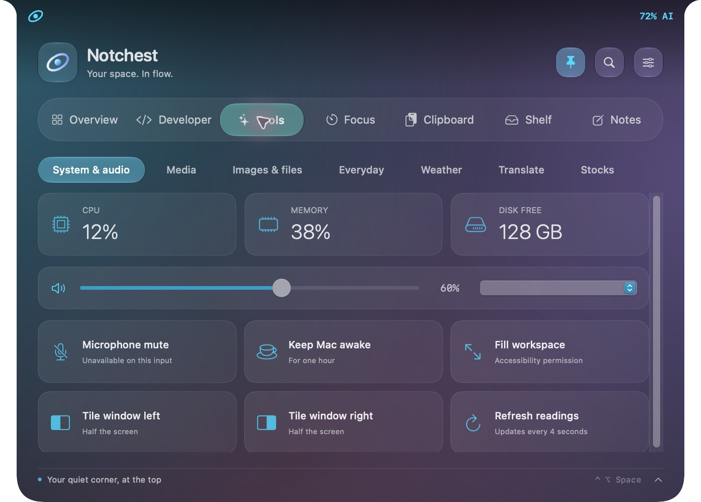
↗ 25 / أدوات الماك نظرة على جهازك المعالج والذاكرة التقريبية والمساحة المتاحة وأدوات الصوت المتوفرة.
↳ قراءات النظام في صور التوثيق قيم توضيحية.
↗ 26 / أدوات الماك الصوت في متناولك صوت المخرج واختيار الجهاز وكتم الميكروفون عند دعم الجهاز.
↳ تختلف الإمكانات حسب الجهاز؛ لا يتوفر مزج صوت مستقل للتطبيقات بعد.
↗ 27 / أدوات الماك رتّب مساحة العمل رتّب النافذة إلى النصف الأيسر أو الأيمن أو مساحة العمل.
↳ يتطلب صلاحية تسهيلات الاستخدام في macOS.
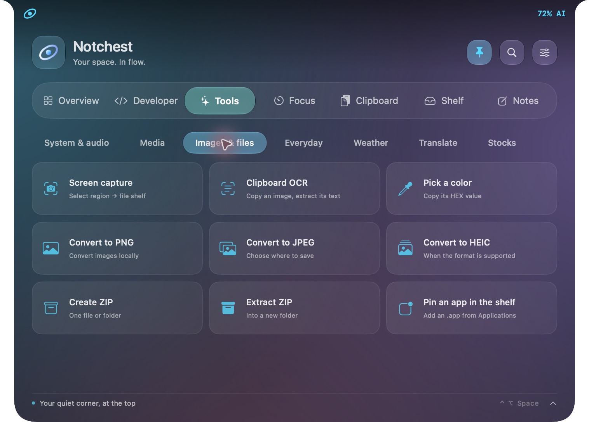
↗ 28 / أدوات الماك صور جاهزة للاستخدام حوّل الصور المختارة إلى PNG أو JPEG أو HEIC عند الدعم.
↳ اختر الملف ومكان حفظ الناتج.
↗ 29 / أدوات الماك التقط واقرأ التقط منطقة شاشة أو استخرج النص من صورة منسوخة باستخدام Vision.
↳ يخضع الالتقاط لصلاحيات macOS، وتعتمد دقة OCR على الصورة واللغة.
↗ 30 / أدوات الماك التقط لونًا استخدم منتقي ألوان النظام وانسخ قيمة HEX.
↳ أداة صغيرة بجانب أدوات الصور.
↗ 31 / أدوات الماك اضغط ملفاتك اضغط ملفًا أو مجلدًا، أو فك ZIP في مجلد جديد.
↳ اختر الملفات التي تريد العمل عليها.
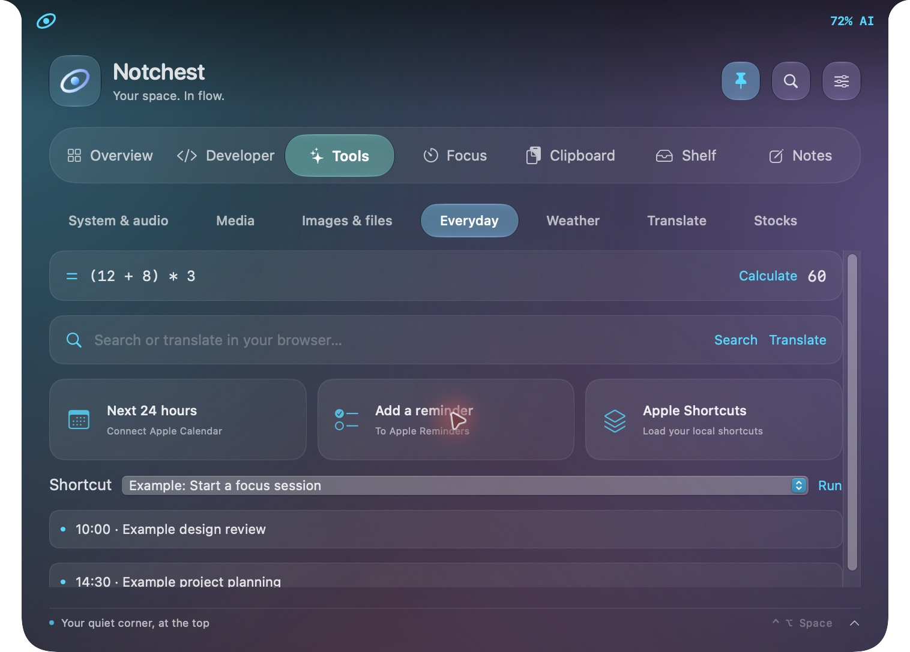
↗ 32 / أدوات الماك احسبها ببساطة حاسبة محلية للعمليات والأقواس وترتيب الأولويات.
↳ يحسب المثال (12 + 8) × 3.
↗ 33 / أدوات الماك اختصاراتك، أقرب اعرض اختصارات Apple الموجودة على جهازك وشغّل ما تختاره.
↳ يعرض المعرض أسماء توضيحية وليست اختصارات شخصية.
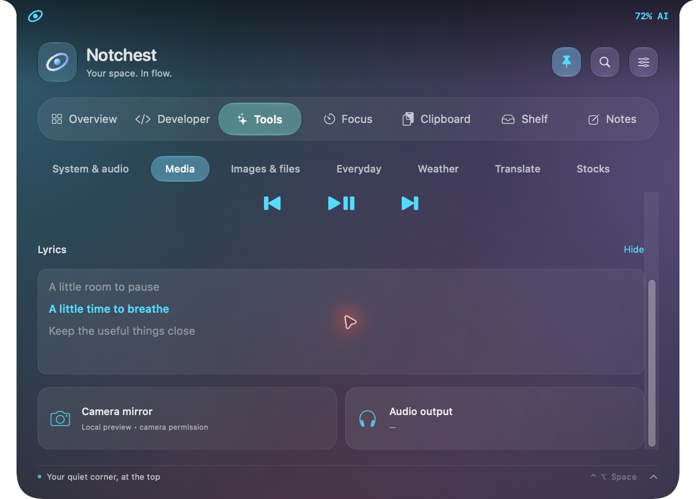
↗ 34 / أدوات الماك مرآة كاميرا محلية افتح مرآة محلية مع إيقاف الالتقاط عند إغلاقها.
↳ يتطلب إذن الكاميرا؛ لم تُفتح الكاميرا لإنتاج الصور.
↗ 35 / أدوات الماك يومك في المتناول اعرض أحداث التقويم المقبلة وأنشئ التذكيرات عند إرسالها.
↳ يتطلب صلاحيات؛ تحتوي الصورة أحداثًا توضيحية فقط.
↗ 36 / أدوات الماك انتبه للتفاصيل الصغيرة تنبيهات اختيارية لملفات التنزيلات الجديدة والأقراص وCaps Lock.
↳ كل مراقبة اختيارية؛ إشعار الملف الجديد لا يؤكد اكتمال تنزيله.
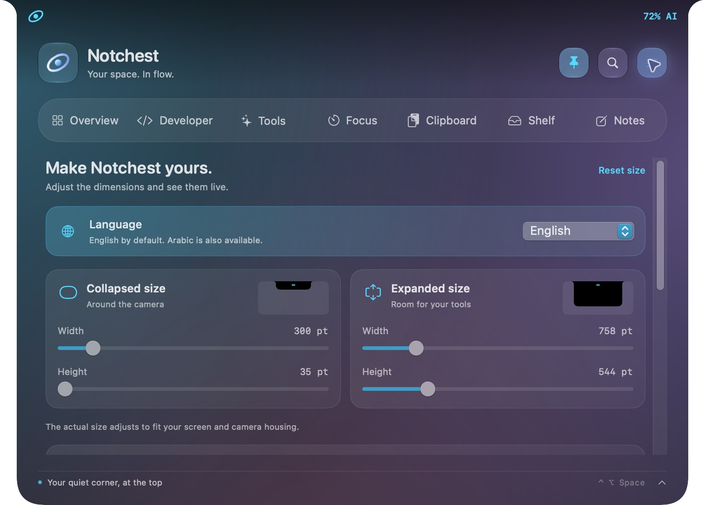
↗ 37 / التخصيص اجعله على طريقتك اضبط الحجم المصغر والمفتوح واللون والحركة والشاشة المختارة.
↳ يحترم تقليل الحركة وتقليل الشفافية.
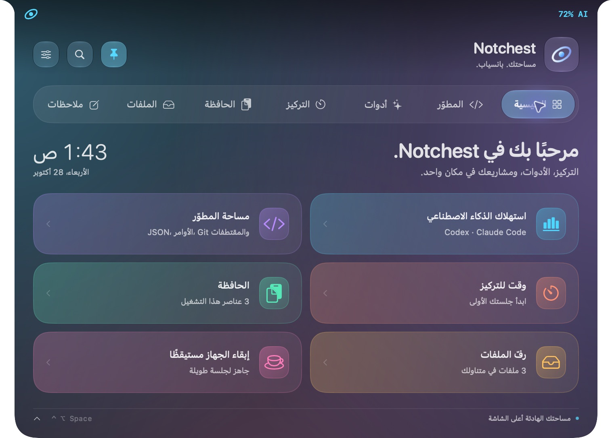
↗ 38 / التخصيص الإنجليزية والعربية الإنجليزية افتراضيًا، والعربية خيار إضافي باتجاه من اليمين لليسار.
↳ يُحفظ اختيار اللغة محليًا.
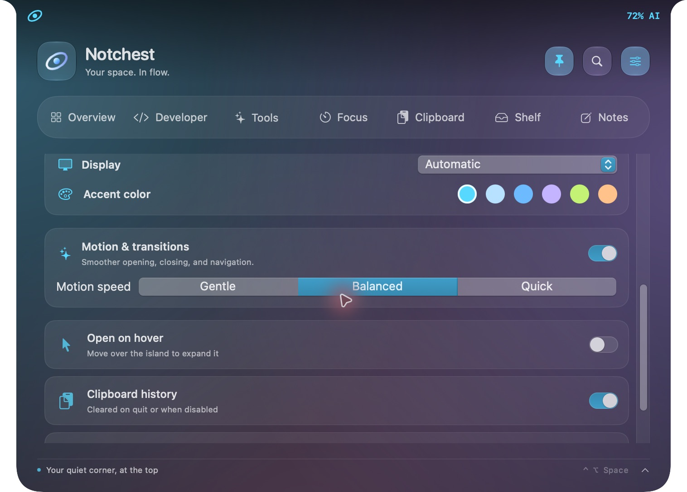
↗ 39 / التخصيص جاهز عندما تحتاجه اختر التشغيل عند تسجيل الدخول والفتح عند مرور المؤشر.
↳ قد يحتاج التشغيل عند الدخول موافقة في إعدادات النظام.
لا توجد نتائج. جرّب كلمة أخرى.
خطوات قليلة وتبدأ
مكان صغير حمّل صورة القرص، واسحب Notchest إلى Applications، واضبط الجزيرة على طريقتك.
احصل على Notchest 0.6.0 ↗ إصدار تطوير · لم يُوقّع بعد بهوية Developer ID أو يُصدّق من Apple. ملاحظات الإصدار
01 حمّل التطبيق DMG لتجربة الماك المعتادة، أو ZIP محمول من صفحة الإصدارات.
02 اضبطه على طريقتك اختر الشاشة والحجم والألوان ولغة الواجهة.
03 اربط ما تحتاجه يوضح دليل الميزات الخدمات الاختيارية وصلاحيات macOS المطلوبة.
معلومات مفيدة
التفاصيل التي تهمك. ما الأجهزة والأنظمة المطلوبة؟ الحزمة مخصصة لـApple Silicon. يستهدف المصدر macOS 13+؛ الترجمة تحتاج 15+ وLiquid Glass يحتاج 26+. اختبار الأنظمة الأقدم وIntel ما زال ضمن خطة العمل.
هل تحتاج كل أداة إلى حساب؟ لا. الملاحظات والتركيز وتحويلات الكود والأدوات المحلية تعمل دون حساب. للأدوات المتصلة مثل GitHub وحدود الحساب والأسهم والموسيقى متطلبات إعداد منفصلة.
هل هذه صور حقيقية من التطبيق؟ نعم. هي لقطات لواجهة SwiftUI وAppKit أثناء التشغيل في نسخة توثيق منفصلة. الملاحظات والاستخدام وقراءات النظام والموسيقى وأحداث المهام أمثلة موسومة بوضوح. لم تُستخدم حسابات شخصية أو الكاميرا أو الحافظة الخاصة.
هل يمكنني بناءه بنفسي؟ بالتأكيد. المشروع بترخيص MIT. استخدم Xcode 26+ أو أدوات Swift مع SDK macOS 26، واتبع تعليمات البناء في المستودع. تعليمات البناء ↗